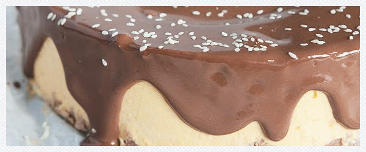

Tofurnik dyniowyy
Spód
- 150 g ciastek owsianych
- 3 łyżki masła orzechowego
Masa tofurnikowa
- 2 kostki tofu naturalnego / 2 x 180 g
- 1/2 szklanki puree dyniowego
- 1/2 szklanki ugotowanej kaszy jaglanej
- 1 szklanka mleka kokosowego, tego z puszki
- 3/4 szklanki cukru pudru, syropu z agawy lub innego ulubionego słodzika
- 2 łyżki mąki ziemniaczanej
- 1/2 łyżeczki cynamonu
- 1/4 łyżeczki imbiru
- 1/4 łyżeczki gałki muszkatołowej
- 1/3 szklanki soku z cytryny
- 1/4 szklanki soku pomarańczowego
- skórka otarta z 1 pomarańczy
Polewa
- 50 g gorzkiej czekolady
- 1 łyżka cukru pudru, syropu z agawy lub innego ulubionego słodzika
- 1/2 szklanki mleka kokosowego, tego z puszki
- do obsypania: prażony sezam

Przygotowanie spodu: wszystkie składniki umieścić w naczyniu blendera i zmiksować na grube okruchy. Tortownicę wyłożyć papierem do pieczenia i na dno wysypać pokruszony spód, przy pomocy palców tortownicę wycisnąć okruchami, a następnie odstawić do lodówki.
Przygotowanie masy: wszystkie składniki poza mlekiem umieścić w misce i przy pomocy ręcznego blendera zmiksować na bardzo gładką masę – dopiero kiedy masa będzie gładka, stopniowo wlewać mleko cały czas miksując.
Piekarnik rozgrzać do 180 stopni. Tofurnikową masę wylać na schłodzony spód i wyrównać, następnie wsunąć do rozgrzanego piekarnika i piec przez 15 minut, po tym czasie temperaturę zmniejszyć do 120 stopni i piec kolejne 45 minut. Na dno piekarnika dobrze jest wstawić małe żaroodporne naczynie z wodą, dzięki czemu wytworzy się para wodna i tofurnik nie popęka.
Po upływie tego czasu wyłączyć piekarnik, pozostawiając tofurnik jeszcze na 15 minut w środku. Dopiero po tym czasie delikatnie wyjąć go na blat i studzić przez przynajmniej 2 – 3 godziny.
Przygotowanie polewy: w niedużym rondelku podgrzać wszystkie składniki, co jakiś czas mieszając trzepaczką. Kiedy czekolada się roztopi wymieszać bardzo dokładnie i odstawić na bok do schłodzenia na 30 minut. Ostudzony tofurnik wyjąć z formy i oblać ostudzoną polewą, na koniec obsypać uprażonym sezamem.